Getting ready as a bride is not just to wear very heavy jewelry and bridal dress and apply some heavy makeup. There are a number of brides from all over the world who actually changed this conception and they got ready on their wedding day in a very unique and distinctive way from all the other brides who look almost similar to each other. Some of them dressed up and got ready in a quite simple way that it was difficult to identify the bride out of all the other girls present there. Each of them has a different style that is not at all similar to the other traditional brides in any way.
Today we are presenting 26 stunning brides pictures from across the world which are proof that beauty lies in diversity.
If you are one of them who doesn't believe in traditional wedding outfits, Just check them out and these pictures will change the way you feel about traditional weddings.
Ghana
Hutsul Bride And Groom, Ukraine
Scotland
Hamar Bride, Ethiopia
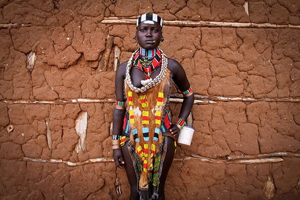Nigeria
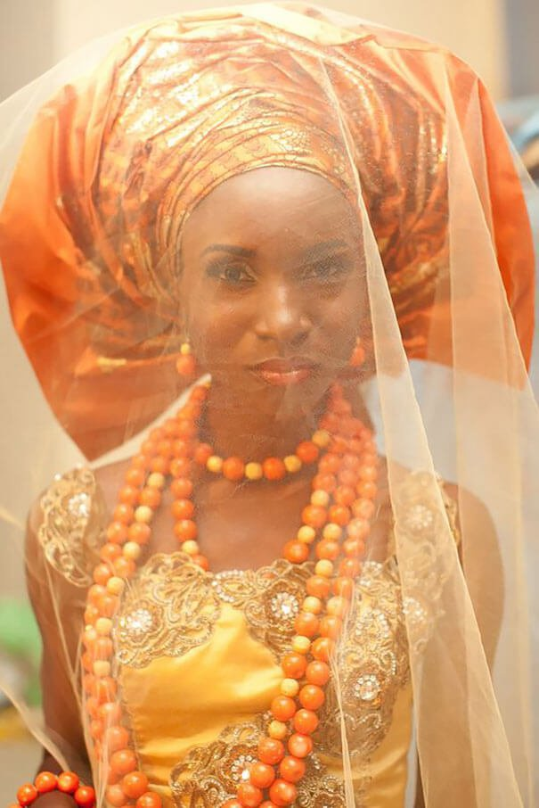Norway
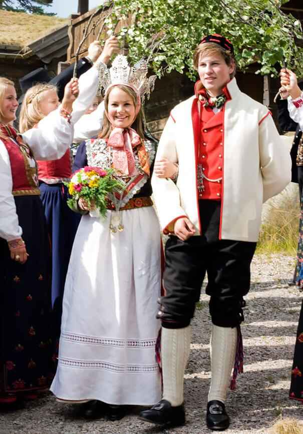Oas Region, Romania
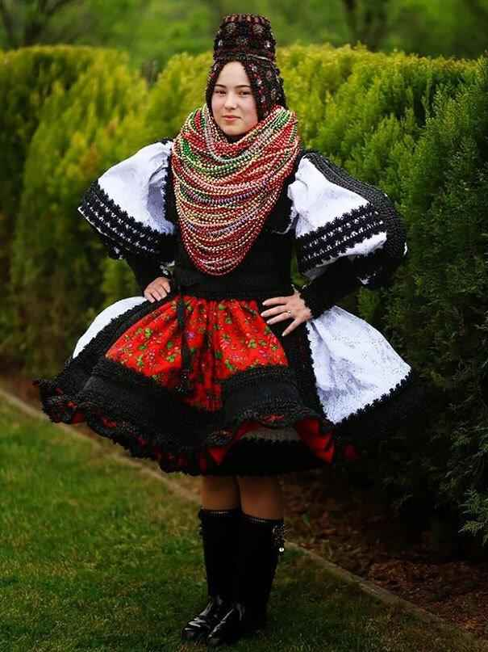China
Matyo Bride, Hungary
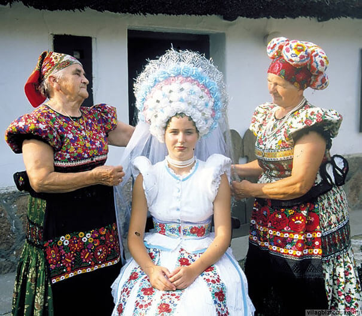Japan
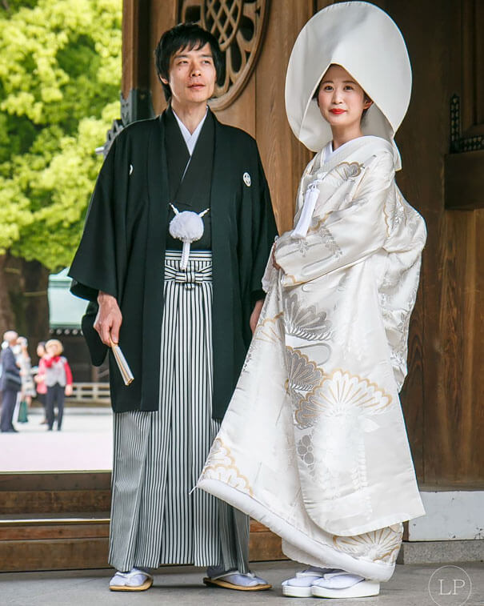Mongolia
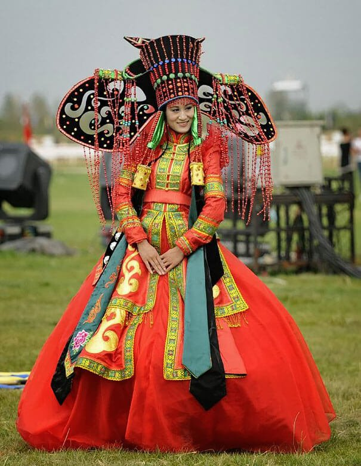Poland
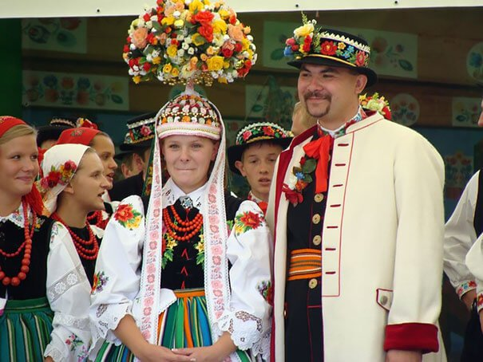Indonesia
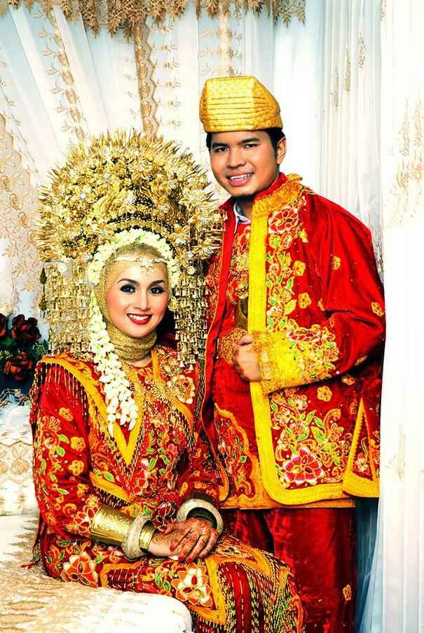Malaysia
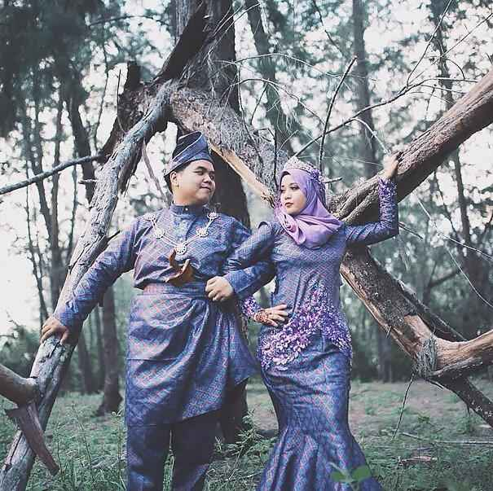Bali, Indonesia
Turkmenistan
Sacred Valley Near Cuzco, Peru
Kazakhstan
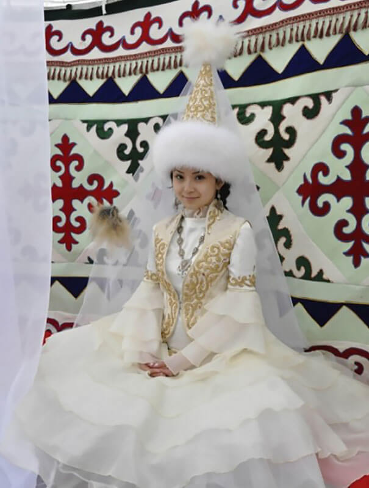Bedouin Bride, Israel
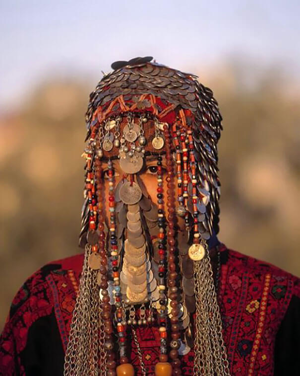Veliky Novgorod, Russia
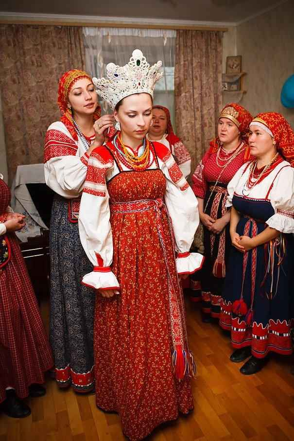Maasai Bride, Kenya
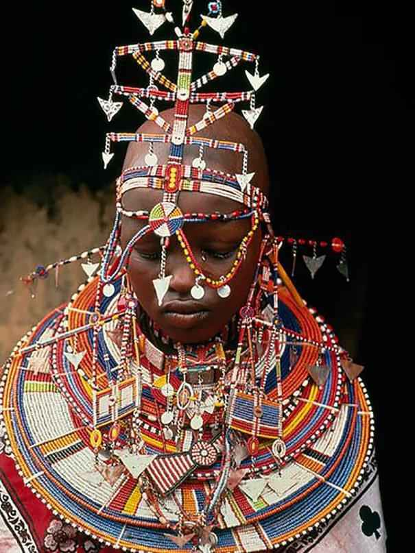Uzbekistan
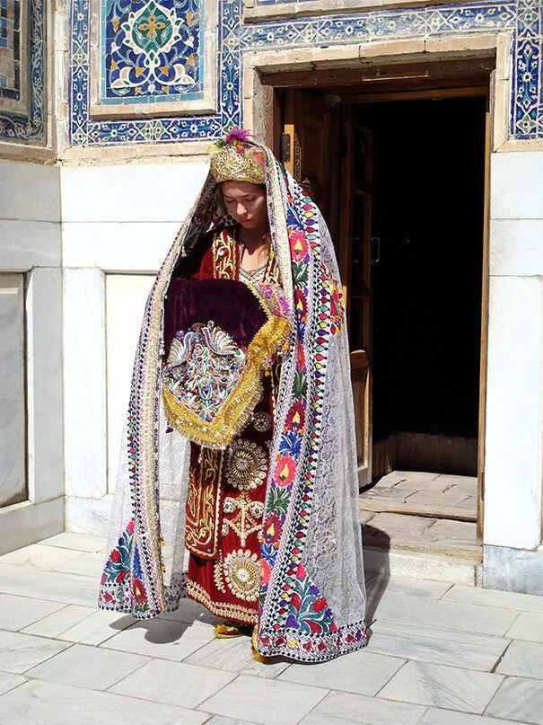Yemenite Jewish Bride, Yemen
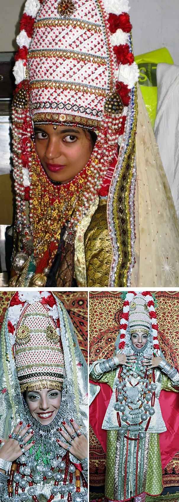Gora Region Between Kosovo And Macedonia
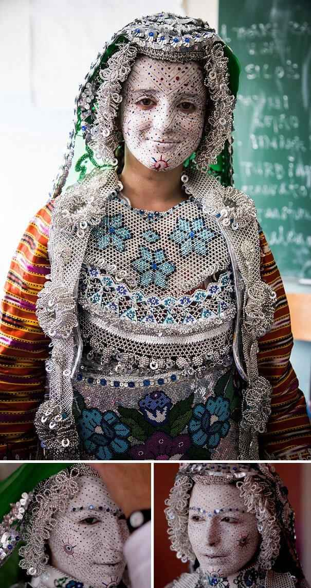Yakan Bride, Philippines
Afghani Jewish Bride, Afghanistan
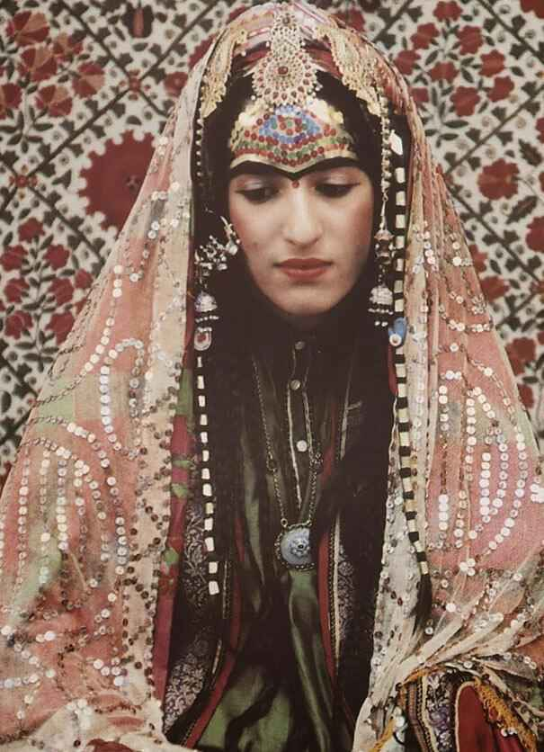